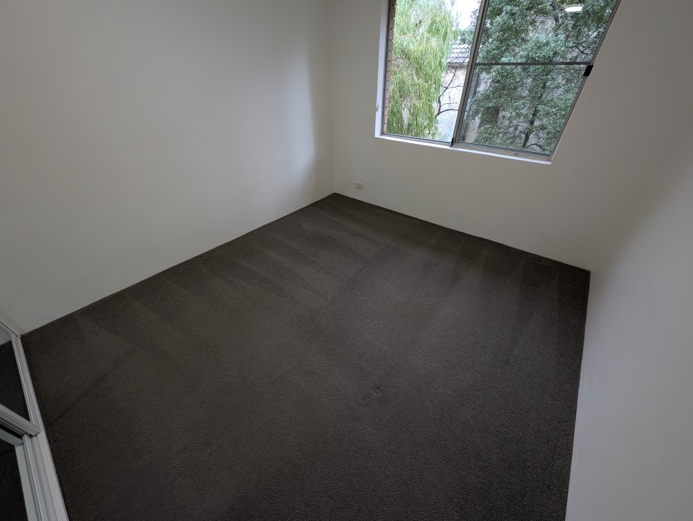
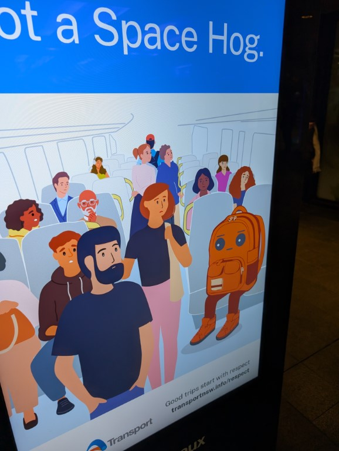
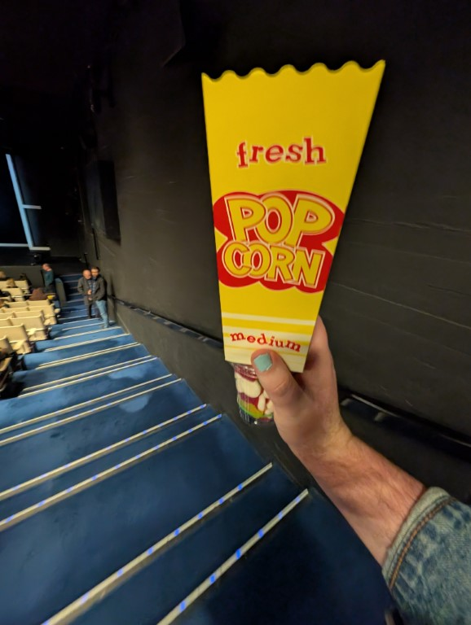
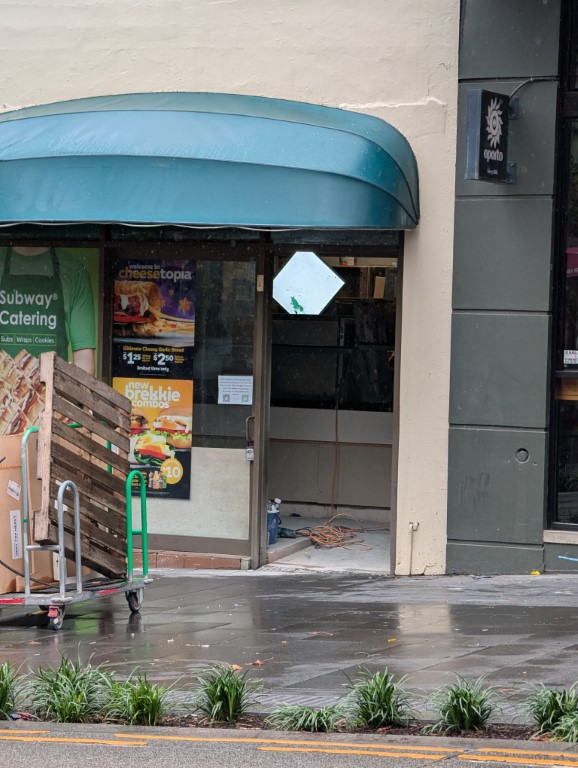
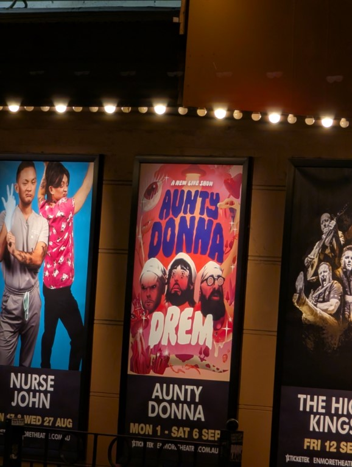
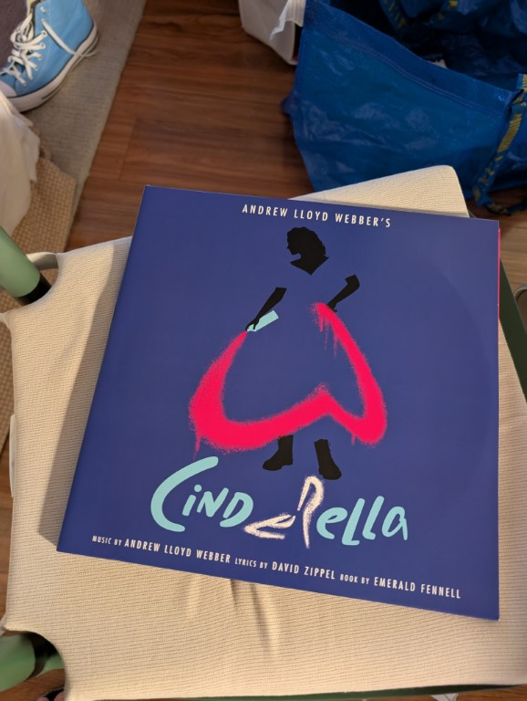
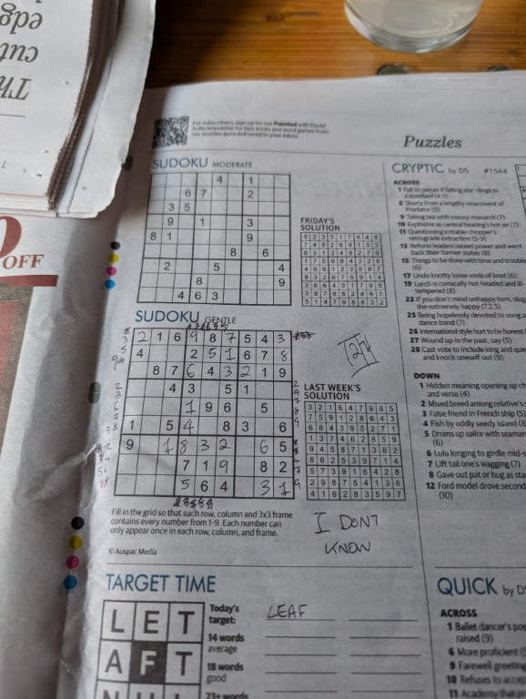
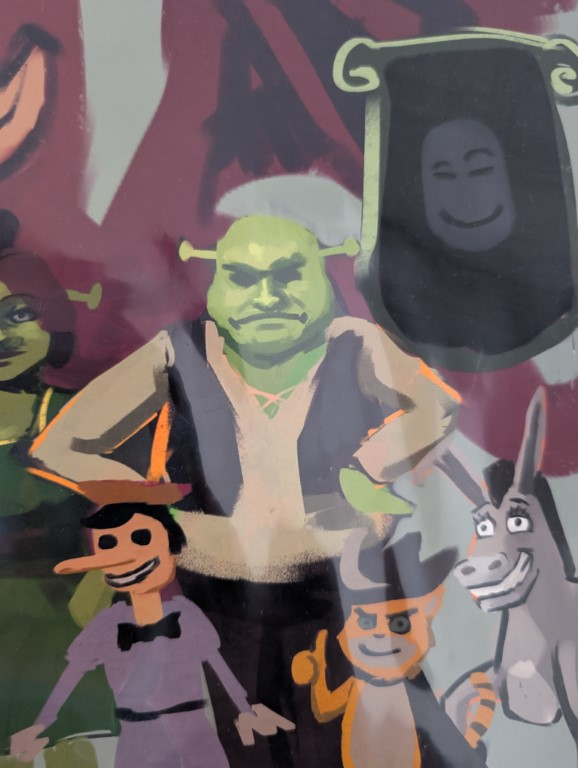
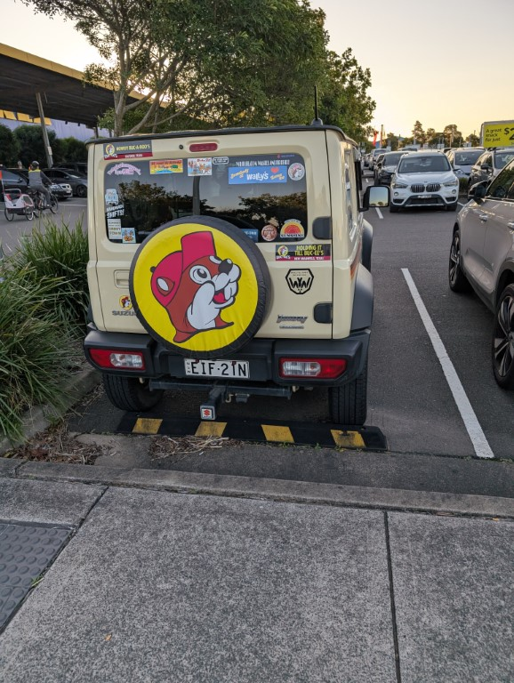

August! The month that was. As i write this intro it's the 15th August 2025 at 6:08pm and I am sat at the bar at Jacobi’s tiki bar. The happy hour cocktail of the month was great and I'm now having a pina colada which is fine (it's a slushie drink and I always forget how much I hate frozen drinks) anyway this month has been so far me just trying to tidy my apartment and failing - update, i finished it and then drove to Bathurst to pickup Mae and then drove home becuase the trains were being dickey

Started the month by cleaning out my old apartment, the real estate agent sucks
Bought some VHS tapes because i was depressed and no i don't have a player but its fun to have them

Saw this ad while out and about and the bag looks so zooted i adore it

Saw a play with my mum at the opera house and got wine drunk, pictured is me trying to get back to my seat holding popcorn and lollies without arising suspicion that im drunk
Then went to see the naked gun with my mum after that, fuckin loved it

Don't know why i took thispic of the subway at surrey hills but it is funny

Hey imma seeing them soon

Bought this vinyl for $15, i truly hate the show but i think its funny to own (i also have multiple bootlegs of it and i am going to watch them one day and make a powerpoint called ‘i don't think andrew lloyd webber understands cinderella”)
Found out the tiki bar near me does happy hours and like dope
I know this is a creep shot but this guy at kmart had a fucking sick jumper that was just a cross stitch sown on the back it looked cool

Oh yeah so i got properly drunk drinking pints of 6% lemon drinks, failed to do the sudoku and had to irish goodbye from the party as i was so drunk
On my way home tho i took this selfie with the poster of the new naked gun

My friend nikki drew shrek from memory and i got a print of it and my mum saw it and with full sincerity went “oh thats you!” and when i said it was meant to be shrek she went “yeah but it looks like you”

Saw this fucking jimny at ikea and fuck its so much
And finally i was cleaning the other day and just went “wait i like how my haircut looks??” anyway thats fun and cunty
It got rid of my nose i cant get over it
Filetr off
Filter on
I don't know why but i found out this is a thing on a pdocast and the allure of having a second account to post bullshit on seems fun but also i don't post? Or is it that i don't post because i don't want my family or people from highschool to see but in making one of these i would be giving into facebooks desire for people to post more. Much to consider. But if i do end up making one ill probs stick with jeremyjeremyjeremyjeremyjer because its a fun monica (like from friends)
I have only started watching media watch recently but ive fallen into an rabbit hole of watching old episodes on youtube and its outstanding just how wild shit used to be and stometimes still is! Also the april/march 2020 ones are particularly funny to watch because paul barry was like “i don't know if ill continue doing this from the studio” like, aw buddy you don't know whats about to hit you. Also im lowkey glad paul barry is retired because some of the ways he treated online topics felt so boomer coded - also that trans bit was really disappointing
I just wanna recommend this again because i think its wonderful. I have never seen the tv show brainDead but at the start of every episode there is a recap of the previous episode. And that recap is done in the form of a song by jonathan coulton (who you might know from portalcredit songs, that time glee stole his cover of baby got back, contributing lyrics to the spongebob musical) and i just adore them
https://www.youtube.com/playlist?list=PLLFXf6fKQkjiDuS6xfZvwyKK419hc3Zem
I want to get into wearing more bracelets but i have no idea where to look, if you know of things that you think would suit me lemme know
Editor jack: ok this whole bit is just me winging about my laptop so you can give it a miss if you want
30th april 2021 i purchased a dell xps 15 off dell ebay because it was like a grand off. Its a 15” laptop which was coming from my previous laptop i had owned since highschool it was so cool to own a new one. It had usb c charging points on both sides! And it could actually charge from it!
Now immediately a problem i learnt with this thing is that the webcams quality is the sorta thing i wouldve killed for in 2008 but now? Ohf. also the microphones are good but as soon as you dare touch the laptop that is all they pickup. Now these are just two minour nitpicks! The major nitpick i had almost immediately was the fact this thing gets so fucking hot, like to the point where i had to buy a laptop riser because it felt like it was burning my legs (I later discovered that the ability to enable/disable the fans was locked behind another piece of dell software that did not come pre installed) oh and the fans. The FANS. whenever it was on you could tell because it sounded like it was taking off holy shit.
Now theres a lot of complaining there but also the i7-19759H and nvidia geforce gtx 1650ti (4gb) did inspire me to start editing videos again which lead to me being commissioned and paid to edit videos (still crazy that happened) so i am grateful to the laptop. But also as i wrote that another problem arose which is the touchpad is the most finicky thing ive ever experienced. You can click by clicking on it but sometimes a section of the touchpad just wont work. And sometimes when you tap it works but othertimes you have to press the entire thing down for it to register a click but that time as i was typing it took the upwards motion of my leg pressing the underside as my palms push down to register a press.
Also the battery gets like 3 hours if im lucky how have i lived with this for so long - this whole thing is leading up to me saying “gee i need to buy a macbook pro and just stfu” but i wanna keep winging
A new thing that happened 2 years ago (actually it started the day i tested negative for covid damn) is that it boot loops twice after starting up, and then refuses to charge. The solution is to start it up. Then hold down the power button. And then kill it again, and then when its turned off plug in the charger until the charging light turns on (which is obnoxious but also convenient) and then you can turn it on. But sometimes you plug in the charger and the light thats always on the end of the cable (which killed me before i started sleeping with a sleep mask) will turn off which means you have to start the progress again.
Also sometimes i open the lid and the keyboard turns on and i have to go through that whole thing
Also when it starts up or resumes from sleep it takes a solid 2 minutes for the wifi to connect and this might just be a windows thing but im on a roll.
Oh also the carbon fibre thing is starting to peel up
Anything else? I don't think so. oh yeah it gets angry when i charge off a 65w charger i use in my lounge room and sometimes makes the trackpad's latency very slow
Also a fun thing about the “sleep” functionality is that the number of times I will shut the lid and it just won't sleep is staggering. Either the video keeps playing or the fans go at full blast and I come back to it either dead or fucking scorching
Another new fun thing im experieincing is that im playing a chill puzzle game. And then it shuts down because ive got it on quiet thermal settings. Ok annoying! So i restart and then open the dell power settings to change it. Its been 5 minutes since i clicked to open it and its only just opened dell you guys suck.
Now you might just say “jack. Youve wanted to upgrade since december last year what gives” and the answer is i am so bad at buying new tech because of the fucking anxiety that the next one is right around the corner and it will solve all my problems. Also i like how my python libraries are setup and i hate seting up python
But hey why have i written all of this? What gives? And to that i say fuck you buddy, i don't know what gives! And neither do you! Words ont he page are the sins of gutenberg that we are yet to atone for i know not of their meaning
So that was that, idk what comes next but who does!